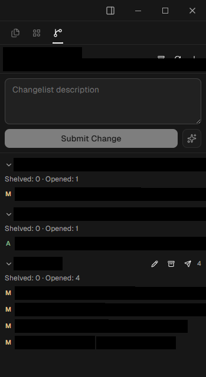
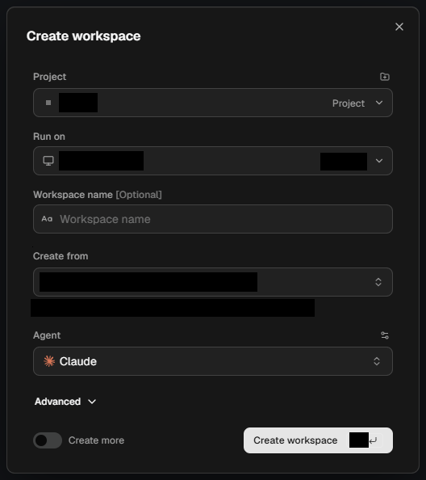
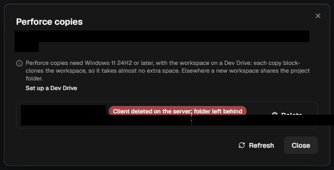
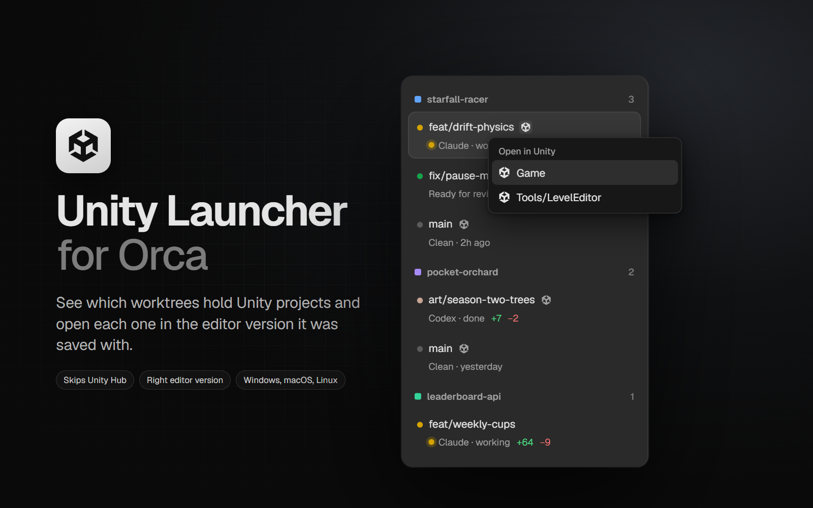

Run Claude Code, Codex and other AI coding agents side by side on Perforce (Helix Core) workspaces, each in its own copy, and open Unity projects in the exact Unity Editor version they need.
Orca gives every coding agent its own workspace, built on Git worktrees. This build does the same for Perforce: open a folder inside a Perforce client workspace and Orca treats it like a Git project.
#have, shelves, submit, sync, moving files between changelists and AI-drafted changelist descriptions. Read-only files are opened for edit when you save them.p4 only needs to be installed where the workspace is.


The bundled Unity Launcher plugin marks every workspace that holds a Unity project. Pick a project from the Unity icon, or right-click the workspace and choose Open in Unity, and it opens in the Unity Editor version that project was saved with.
Game/ and Tools/LevelEditor/, and lists each one.
orca-windows-setup.exe from the latest release and run it. The installer is unsigned, so the first time Windows SmartScreen warns about an unknown publisher: choose More info, then Run anyway.p4 login. Keep workspaces on a Dev Drive for Perforce copies.These features are proposed to upstream Orca (Perforce, worktree badges for Unity Launcher). Once they land there, official Orca is the better choice.